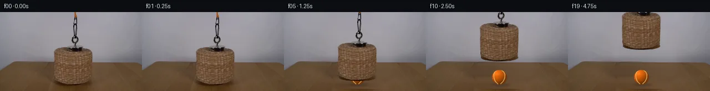

![首帧]()

Round 00
2026-11-05T09:02:46.150439+00:00像素候选变化代码 +266/−0inspection 更新
pixels 8ee6f3bb6137e6a2 · code ab8a9bbc1f788f41
查看本轮 generate.py 真实 diff
--- previous/generate.py
+++ current/generate.py
@@ -0,0 +1,266 @@
+#!/usr/bin/env python3
+"""Generate the 20-frame PixelWorld sequence from the single supplied frame.
+
+The program uses only local deterministic pixel operations. It reconstructs the
+small background region hidden by the hanging setup, extracts that setup from the
+source, draws the occluded ball analytically, and translates the setup upward.
+"""
+
+from pathlib import Path
+
+import cv2
+import numpy as np
+from PIL import Image, ImageDraw, ImageFont
+
+from artifact_io import save
+
+
+ROOT = Path(__file__).resolve().parent
+H, W = 144, 256
+
+
+def antialiased_shapes() -> tuple[np.ndarray, np.ndarray]:
+ """Return measured basket and chain priors as 0..1 masks."""
+ scale = 4
+ basket_hi = Image.new("L", (W * scale, H * scale), 0)
+ d = ImageDraw.Draw(basket_hi)
+
+ def box(v):
+ return tuple(int(round(x * scale)) for x in v)
+
+ # Closed woven top and tapered cylindrical body, including the lower rim.
+ d.ellipse(box((96.5, 62.5, 168.0, 82.0)), fill=255)
+ body = [
+ (97.0, 70.5), (98.0, 119.5), (99.5, 126.0),
+ (104.0, 130.0), (114.0, 132.5), (151.0, 133.0),
+ (160.5, 130.5), (165.0, 126.0), (167.5, 72.0),
+ ]
+ d.polygon([(int(x * scale), int(y * scale)) for x, y in body], fill=255)
+ d.ellipse(box((99.0, 120.0, 166.0, 133.5)), fill=255)
+
+ # The compact dark magnet/attachment that sits on the woven top.
+ d.ellipse(box((124.0, 59.0, 145.5, 71.5)), fill=255)
+ d.rectangle(box((127.0, 61.0, 143.0, 70.0)), fill=255)
+
+ resampling = getattr(Image, "Resampling", Image)
+ basket = np.asarray(
+ basket_hi.resize((W, H), resampling.LANCZOS), dtype=np.float32
+ ) / 255.0
+
+ # Broad prior only constrains where the measured pixel difference may become
+ # chain alpha; the actual thin silhouette is derived below from source pixels.
+ chain_hi = Image.new("L", (W * scale, H * scale), 0)
+ c = ImageDraw.Draw(chain_hi)
+ c.rectangle(box((132.0, 0.0, 139.0, 18.0)), fill=255)
+ c.rectangle(box((127.5, 7.0, 142.5, 64.5)), fill=255)
+ chain_prior = np.asarray(
+ chain_hi.resize((W, H), resampling.LANCZOS), dtype=np.float32
+ ) / 255.0
+ return basket, chain_prior
+
+
+def clean_plate(src_u8: np.ndarray) -> np.ndarray:
+ """Replace only the measured central occlusion by row-wise texture synthesis."""
+ src = src_u8.astype(np.float32)
+ smooth = cv2.GaussianBlur(src, (0, 0), 1.25)
+ residual = src - smooth
+ out = src.copy()
+
+ for y in range(H):
+ if y <= 58:
+ xl, xr = 122, 150 # cord, hook, and chain
+ elif y <= 139:
+ xl, xr = 86, 181 # basket plus its original contact shadow
+ else:
+ continue
+
+ left = src[y, xl - 6:xl - 1].mean(axis=0)
+ right = src[y, xr + 2:xr + 7].mean(axis=0)
+ width = xr - xl + 1
+ for j, x in enumerate(range(xl, xr + 1)):
+ f = (j + 1.0) / (width + 1.0)
+ # Smoothstep interpolation preserves the source's broad horizontal
+ # exposure gradient while avoiding a synthetic straight color ramp.
+ s = f * f * (3.0 - 2.0 * f)
+ base = left * (1.0 - s) + right * s
+ donor_x = x - 70 if x < 134 else x + 70
+ donor_x = int(np.clip(donor_x, 2, W - 3))
… diff truncated; 179 more lines …